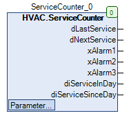

ServiceCounter (FB)¶
FUNCTION_BLOCK ServiceCounter
Kurzbeschreibung¶
Signalisierung von Wartungen
Darstellung¶

Schnittstellen¶
Eingänge¶
Ausgänge¶
Name Datentyp Wertebereich Initialwert Funktion dLastService DATE Datum der letzten Wartung dNextService DATE Datum der Fälligkeit der nächsten Wartung xAlarm1 BOOL Anzeige, dass Wartung demnächst fällig ist xAlarm2 BOOL Anzeige, dass Wartung heute fällig ist xAlarm3 BOOL Anzeige, dass Wartung bereits fällig war diServiceInDay DINT Anzeige in wie vielen Tagen die nächste Wartung fällig ist diServiceSinceDay DINT Tage seit der letzten Wartung
Sollwerte / Parameter¶
Name Datentyp Wertebereich Initialwert Funktion iAlarm1 INT (0-diServiceInterval)...0 -10 Alarmgrenze 1 in Tagen (Wartung ist demnächst fällig) iAlarm3 INT 0...diServiceInterval 10 Alarmgrenze 3 in Tagen (Wartung war bereits fällig) diServiceInterval UINT 1...1825 365 Wartungsintervall (in Tagen) xReset BOOL FALSE Wartungstagezähler zurücksetzen xEn BOOL TRUE Freigabe der Ausgänge xAlarm1 bis 3
Funktionsbeschreibung¶
Allgemeines¶
Dieser Funktionsbaustein stellt Funktionalitäten zur Signalisierung von Wartungsintervallen bzw. zur Rücksetzung des Zähler nach erfolgter Wartung bereit.
Die drei Ausgänge zur Signalisierung sind temporär abschaltbar.
Die Anzahl der Tage bis zur nächsten Wartung (Wartungsintervall) ist frei einstellbar. Die Anzahl der Tage seit der letzten Wartung wird berechnet und angezeigt.
Ausgänge xAlarm1, xAlarm2 und xAlarm3¶
Mit dem Sollwert / Parameter xEn gleich FALSE werden die Ausgänge xAlarm1, xAlarm2 und xAlarm3 vorübergehend deaktiviert.
Beim Ablauf des nächsten Serviceintervalls wird der Sollwert / Parameter wieder auf den Initialwert TRUE gesetzt.
Der Ausgang xAlarm1 wrid TRUE, wenn der nächste Wartungstermin in weniger als iAlarm1 Tagen erreicht wird. Da der Zeitraum vor dem Wartungstermin liegt, ist der Wert negativ einzugeben.
Der Ausgang xAlarm2 wird TRUE, wenn heute die Wartung fällig ist (diServcieInDay <= 0).
Der Ausgang xAlarm3 wird TRUE, wenn der nächste Wartungstermin bereits um mindestens iAlarm3 Tage zurück liegt.
Die drei Ausgänge werden wieder auf FALSE gesetzt, wenn der Wartungstagezahler mit dem Sollwert / Parameter xReset zurück gesetzt wird. Dabei wird die Variable dLastService mit dem aktuellen Datum beschrieben.
Sollwerte / Parameter iAlarm1, iAlarm3 und diServiceInterval¶
Die Sollwerte / Parameter sind mit Eingabegrenzen gemäß nachfolgender Tabelle versehen:
Sollwert / Paremeter Minimalwert Maximalwert Hinweis diServiceInterval 0 5 * diServiceInterval Serviceintervall iAlarm1 (0-diServiceInterval) 0 Schwellwert für Ausgang xAlarm1 iAlarm2 iAlarm1 iAlarm3 Schwellwert für Ausgang xAlarm2 iAlarm3 iAlarm2 diServiceInterval Schwellwert für Ausgang xAlarm3 Der Sollwert / Parameter iAlarm2 kann durch den Benutzer nicht verändert werden.Die Sollwerte / Parameter werden zyklisch geprüft und bei Bedarf auf die entsprechenden Grenzwerte limitiert.Jede Veränderung eines Sollwerts / Parameters kann daher eine Veränderung eines anderen Sollwerts / Parameters bewirken.
Voraussetzung für den Einsatz des Funktionsbausteins ServiceCounter
Zur korrekten Funktion ist der Einsatz des Funktionsbausteins TimeRead mit xEn = TRUE erforderlich.
Visualisierung¶
Codesys¶
- InOut:
Scope Name Type Initial Comment Input xEn BOOL TRUE Freigabe der Ausgänge xAlarm1 bis 3 xReset BOOL FALSE Wartungstagezähler zurücksetzen diServiceInterval UINT 365 Wartungsintervall (in Tagen) iAlarm3 INT 10 Alarmgrenze 3 in Tagen (Wartung war bereits fällig) iAlarm1 INT -10 Alarmgrenze 1 in Tagen (Wartung ist demnächst fällig) Output dLastService DATE Datum der letzten Wartung dNextService DATE Datum der Fälligkeit der nächsten Wartung xAlarm1 BOOL Anzeige, dass Wartung demnächst fällig ist xAlarm2 BOOL Anzeige, dass Wartung heute fällig ist xAlarm3 BOOL Anzeige, dass Wartung bereits fällig war diServiceInDay DINT Anzeige in wie vielen Tagen die nächste Wartung fällig ist diServiceSinceDay DINT Tage seit der letzten Wartung